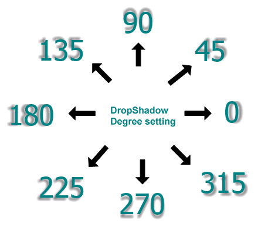

Практическое руководство. Создание текста с тенью
Примеры в этом разделе демонстрируют создание эффекта тени для отображаемого текста.
Пример
DropShadowEffect Объекта позволяет создавать разнообразные эффекты тени для Windows Presentation Foundation (WPF) объектов. В следующем примере показано применение эффекта тени к тексту. В этом случае используется мягкая тень, то есть цвет тени размывается.
Ширину тени можно управлять, задав ShadowDepth свойство. Значение 4.0 обозначает ширину тени, равную 4 точкам. Можно управлять мягкости или размытия тени, изменив BlurRadius свойство. Значение 0.0 указывает на отсутствие размытия. В следующем примере кода показано создание мягкой тени.
<!-- Soft single shadow. -->
<TextBlock
Text="Shadow Text"
Foreground="Teal">
<TextBlock.Effect>
<DropShadowEffect
ShadowDepth="4"
Direction="330"
Color="Black"
Opacity="0.5"
BlurRadius="4"/>
</TextBlock.Effect>
</TextBlock>
Note
Эти эффекты тени не проходят через Windows Presentation Foundation (WPF) конвейера отрисовки текста. Следовательно, тип ClearType при использовании этих эффектов отключен.
В следующем примере показано применение эффекта жесткой тени к тексту. В этом случае тень не размыта.
Можно создать жесткую тень, задав BlurRadius свойства 0.0, который указывает, что отсутствие размытия. Можно контролировать направление тени, изменив Direction свойство. Значение этого свойства градус от 0 и 360. На следующем рисунке показан значения направления Direction значение свойства.

В следующем примере кода показано создание жесткой тени.
<!-- Hard single shadow. -->
<TextBlock
Text="Shadow Text"
Foreground="Maroon">
<TextBlock.Effect>
<DropShadowEffect
ShadowDepth="6"
Direction="135"
Color="Maroon"
Opacity="0.35"
BlurRadius="0.0" />
</TextBlock.Effect>
</TextBlock>
Использование эффекта размытия
Объект BlurBitmapEffect может быть использован для создания аналогичного эффекта тени, который можно разместить позади текстового объекта. Если к тексту применяется эффект размытия для точечных рисунков, текст равномерно размывается во всех направлениях.
В следующем примере показан эффект размытия, примененный к тексту.

В следующем примере кода показано создание эффекта размытия.
<!-- Shadow effect by creating a blur. -->
<TextBlock
Text="Shadow Text"
Foreground="Green"
Grid.Column="0" Grid.Row="0" >
<TextBlock.Effect>
<BlurEffect
Radius="8.0"
KernelType="Box"/>
</TextBlock.Effect>
</TextBlock>
<TextBlock
Text="Shadow Text"
Foreground="Maroon"
Grid.Column="0" Grid.Row="0" />
Использование преобразования переноса
Объект TranslateTransform может быть использован для создания аналогичного эффекта тени, который можно разместить позади текстового объекта.
В следующем примере кода используется TranslateTransform для смещения текста. В этом примере слегка смещенная копия текста под основным текстом создает эффект тени.
В следующем примере кода показано создание эффекта тени с помощью преобразования.
<!-- Shadow effect by creating a transform. -->
<TextBlock
Foreground="Black"
Text="Shadow Text"
Grid.Column="0" Grid.Row="0">
<TextBlock.RenderTransform>
<TranslateTransform X="3" Y="3" />
</TextBlock.RenderTransform>
</TextBlock>
<TextBlock
Foreground="Coral"
Text="Shadow Text"
Grid.Column="0" Grid.Row="0">
</TextBlock>